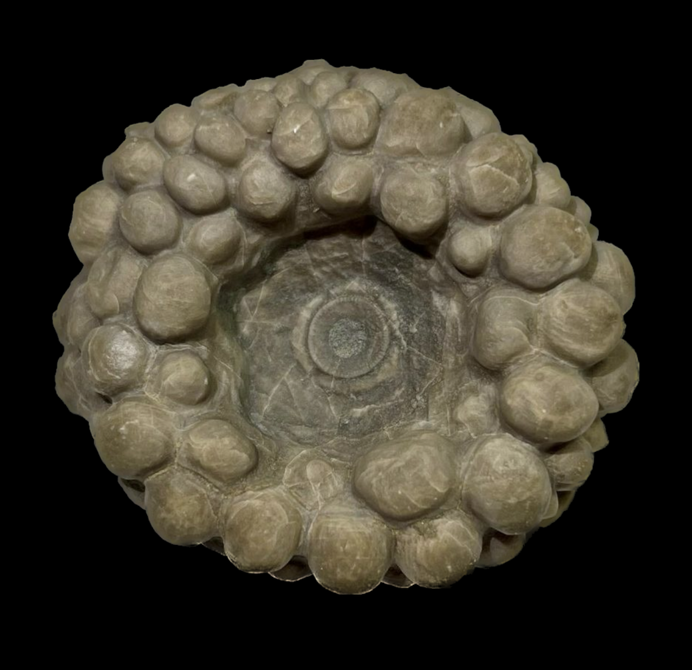
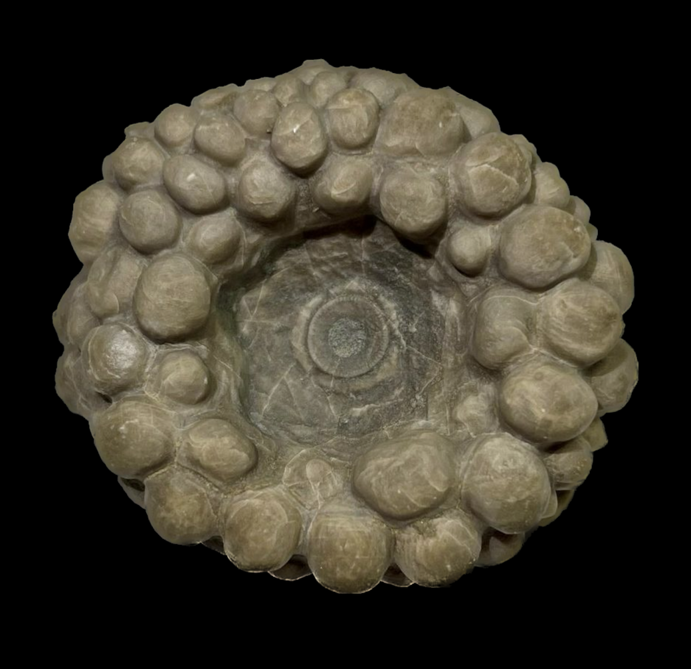

Megistocrinus concavus
• Devonian
• Thunder Bay Limestone
• Michigan, USA
Size: 4 cm across
There are many species of Megistocrinus that occur in Michigan, which are mostly distinguished by subtle differences in calyx plating and ornamentation. I certainly wouldn't be able to differentiate most of them. That is clearly not the case for M. concavus, which is evidently the most distinctive species and arguably the rarest. The incredible bulbous nodes that develop from the calyx are quite striking, and apparently make preparation very difficult and time-consuming.
 
